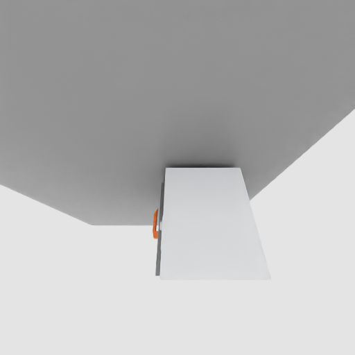
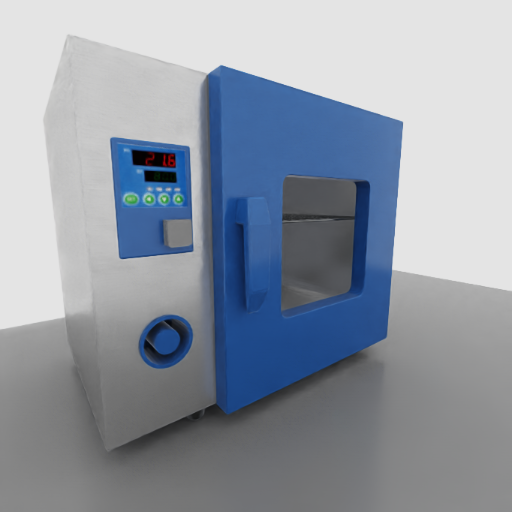

当前进展总览
pick、place、open_door。labutopia_franka_smoke_clean8_20260622_1002081 skipped，validator 通过。本周完成了什么
| 事项 | 产品视角状态 | 说明 | 证据边界 |
|---|---|---|---|
| LabUtopia Franka POC | 已跑通 | 三个 POC 任务能在本地评测 server 中启动、reset、step、结束。 | 证明接入链路，不证明策略能力。 |
| 场景资产加载 | Franka POC 闭环 | 通过 manifest 把 LabUtopia overlay 资产根目录接入运行时，并映射对象名。 | 证明 scene overlay 可加载；不证明 reset 后布局或相机画面已验收。 |
| 结果生命周期 | 已修复 | 每个任务写 result_info.json，最终写 result.json，后处理异常 fail fast。 |
不会把后处理错误伪装成已完成。 |
| 并行任务隔离 | 已隔离 | LabUtopia 用 18088，EOS/其他工程师侧 8087 未被干扰。 |
run_id、worktree、端口均独立。 |
| 渲染图验收 | 任务渲染通过 | 当前三张 eval readback 图为非黑，且三任务最新正式诊断均为 render_validation.passed=true：pick 目标清楚，place 关系可读，open_door 关闭位为 0.0，门板、框架和细橙色把手可识别。 |
这证明 Franka POC 任务渲染门禁已过；P2 native complex DryingBox gate 也已补证通过。下一道硬门槛是 Lift2 复合资产和官方 runner gate。 |
资产加载是怎么做的
可以把资产加载理解成“任务配置只写短路径，运行时通过 manifest 找到真实资产仓库，再把对象名翻译成评测系统认识的名字”。这让任务包保持轻量，也避免把大资产直接放进代码仓库。
scene_usds/labutopia/level1_poc/lab_001/scene。configs/tasks/ebench/labutopia_lab_poc/common/assets_manifest.json。ASSETS_DIR 指到 LabUtopia overlay。scene.usda 文件并加载进 Isaac Sim。beaker2 映射成 obj_beaker2 供 evaluator 使用。已经闭环的部分
LabUtopia 场景 overlay 能被 Franka POC 加载，相关对象名能通过运行时对象映射进入 evaluator。P1 后，静态 USD 坐标已经归一到工作区，门把手保留为干燥箱内部子路径，三任务任务渲染门禁也已通过。P2 后，open_door 已经改用 LabUtopia native complex DryingBox_01，并在 EBench eval readback 中看到原生箱体和 nested handle。这证明接入路径、静态资产组织、native DryingBox wrapper 和任务读图链路已经在 Franka POC 内闭环；它不证明策略成功或官方 Lift2 baseline 可评。
还没闭环的部分
native DryingBox 的 Franka POC gate 已通过，但官方 baseline 仍未闭环。下一步要把 LabUtopia overlay、默认 robot_usds/lift2 和默认 miscs/curobo 组成 Lift2 candidate 资产根目录，做 composite asset preflight、Lift2 dry smoke 和官方 runner discovery；这些通过前仍保持 official_baseline_evaluable=false。
P0：黑屏问题与修复（产品向说明）
P0 是什么？ 在 Franka POC 后端 smoke 已经跑通之后，我们加的第一道「渲染读图门禁」：走 EBench 正式评测链路（reset → 相机读回 → 保存帧），三个任务不能再出现 纯黑图。P0 只要求「相机能读到有效像素」，不要求 PM 一眼看懂任务——那是 P1 的事。
camera2 不再 channel_max=[0,0,0]76e1da2当时看到了什么
6/22 render smoke（run_id=labutopia_franka_render_smoke_20260622_150819）里，三个任务保存的 camera2 帧全部是纯黑：RGB 采样 min/max/mean 均为 0。最初周报里的三张 JPG 也不是这条链路拍出来的，而是手工 direct-render 截图，不能代表真实评测画面。
我们先排除了什么
用诊断脚本在 两个时间点各抓一帧：get_eval_camera_data() 刚返回时，以及 EpisodeRecorder 写 PNG 前。结论：readback_black_before_recorder——图在「读相机」这一步就已经全黑，不是录屏/写文件模块弄坏的。问题在相机、光照或场景渲染侧。
黑屏其实是三件事叠在一起
| 原因 | 产品化解释 | 算谁的问题 | P0 怎么处理 |
|---|---|---|---|
| P0a · 相机位姿没生效 | 任务 YAML 里写了相机位置和朝向，但 GenManip 的「简化相机格式」运行时没有真正应用，相机停在默认位置，对着空处拍。 | GenManip 代码缺口 + LabUtopia 接入选用了这条相机路径 | 修 camera_utils.py，让 YAML 位姿生效；临时把 camera2 挪到物体所在区域 |
| P0b · overlay 场景缺光 | LabUtopia 接入用的 overlay 场景最初只搬了物体，没有把 LabUtopia 原生场景里的灯光一起带过来；没光就容易黑屏。 | LabUtopia 接入方式（overlay 生成策略） | 在 overlay 生成器里补一盏确定性 DomeLight（强度 1000） |
| 坐标错位 | 机器人站在工作台旁（x≈-0.4），瓶子/烧杯却在源场景远距离坐标（x≈8–10），干燥箱更远（x≈45）。就算相机能拍，也可能对着空桌子。 | 接入配置 / 资产布局 | P0 临时挪相机；真正把物体归位是 P1 |
什么是 overlay 场景？（P0b 改的是这里）
overlay = 为 LabUtopia 单独生成、放在独立目录里的 EBench 兼容场景包；不直接修改官方下载的 EBench-Assets。
评测时系统把 ASSETS_DIR 临时指到：
_datasets/EBench-Assets-Overlay/labutopia_level1_poc/assets
任务配置里的 scene_usds/labutopia/level1_poc/lab_001/scene 会加载这里生成的 scene.usda。
P0b 改的代码位置（不是 LabUtopia 主仓库）：
standalone_tools/labutopia_poc/build_asset_overlay.py— 生成场景时写入DeterministicDomeLightvalidate_task_package.py— 静态检查「场景里必须有这盏灯」common/assets_manifest.json— 记录灯光契约
重新跑生成器后，真正的产物是 overlay 目录里的 scene.usda。
为什么 EBench 原生任务没踩这个坑？
GenManip 里相机配置分两条路，靠 YAML 里有没有 pixel_size 字段自动分流：
| 路径 | 怎么识别 | 谁在用 | P0 前会不会设相机位姿 |
|---|---|---|---|
| SimBox Style | YAML 含 pixel_size、f_number、camera_params 等完整内参 |
EBench 官方 Lift2 baseline 的腕部/俯视相机（fixed_camera_lift2_simbox.yml） |
会 |
| GenManip Style | 只有 focal_length、position、resolution 等简化字段 |
LabUtopia Franka POC（labutopia_franka_poc.yml，从 LabUtopia 原生配置简化而来） |
P0 前不会（已修） |
所以：不完全是「EBench 没问题、GenManip 全坏了」。官方 baseline 主要走 SimBox 相机 + 完整场景自带灯光；我们 Franka POC 故意走了更简化的 GenManip Style 相机来快速冒烟，才暴露了这条少走路径的缺口。官方可评最终仍要切到 SimBox + Lift2（lift2_candidate profile）。
P0 修完到什么程度
可以说
- eval 链路不再纯黑（pick/place 受控诊断：
readback_visible，nonzero_pixels=65536） - 黑屏主因已定位：相机 readback 阶段，不是 recorder 写盘
- GenManip Style 相机位姿缺口已在接入分支修复
- overlay 场景已补确定性光照
还不能说（P1 及以后）
- P0 后画面一度是「几乎整屏灰底」——能拍到像素，但看不清任务对象（
FAIL_LOW_TEXTURE） - PM 可读的任务截图 → P1 资产归位 + 任务级隐藏后才通过
- 官方 Lift2 baseline 可评 → 尚未验证
camera2 纯黑P0 证据链接
| 证据 | 说明 |
|---|---|
| render_diagnostics_20260623.json | 三任务纯黑 readback 的初始诊断（readback_black_before_recorder）。 |
| render_p0a_p0b_20260623.json | P0a 相机 + P0b 光照修复后，pick/place 变为非黑（但仍 FAIL_LOW_TEXTURE）。 |
| render_visual_investigation_20260623.md | 技术复盘：黑屏边界、坐标 red flags、P0/P1 递进关系。 |
| franka_render_smoke.md | 6/22 render smoke 记录与 follow-up 结论。 |
EBench 加载后的三任务渲染图
2026-06-23 到 2026-06-24 复核结论：旧图、P1 对照图、旧 P2 native 图和 P2 retake 图都放在这里，方便做前后对照。旧图是历史失败样例，用来说明最开始“相机拍不到、资产位置不对、任务目标看不懂”的问题；P1 图来自正常 EBench/evaluator camera readback，用来说明我们已经把底层链路推进到“能拍到真实场景、能看懂任务目标”；P2 retake 图进一步证明 open_door 已经回到 LabUtopia native complex DryingBox_01，并且蓝色正门、白色侧面、把手、观察窗和控制面板都可读。当前结论是 Franka POC native gate 已通过；官方 Lift2 baseline 仍未验证，所以不能把这些图直接说成 baseline 成绩证据。
旧图要表达的问题
旧图的核心问题不是“画面不够漂亮”，而是“看图不能判断任务是否成立”：抓取图像白色设备局部，不像要抓的蓝色瓶；放置图只剩黑背景和白色平面，看不到要放的物体；开门图只拍到黑色箱体角，看不到门、把手和动作点。这类图只能说明我们曾经拍到过某个局部，不能说明 EBench 评测链路已经可用。
我们是怎么解决的
先修相机和光照，让评测相机真的能读回画面；再把瓶子、烧杯、托盘、干燥箱从原始实验室坐标搬回 Franka 工作区；然后按任务隐藏无关物体。对 open_door，P1 额外做了 sanitized_surrogate 对照组：固定底座、只保留一个门关节、对齐铰链；随后补关节初始目标回放，把把手移到非铰链侧，删除额外橙色块，并换成正面任务相机。P2 则回到 LabUtopia native complex DryingBox_01，保留原生 visual/hierarchy/handle，只用 additive physics override 修 root scale、fixed base、mass/inertia、joint target 和非任务 DOF；最后又修复 native material:binding 的 payload scope 问题，并用展示/证据相机 retake。更系统的解释见 USD articulation 与 DryingBox 门问题教学页。
渲染证据状态
当前三任务均为 readback_visible 且 render_validation.passed=true。最新任务级隐藏后，level1_pick 只保留抓取瓶子，目标清楚；level1_place 同时保留烧杯和黄色目标托盘，任务关系可读；level1_open_door 已从 P1 surrogate baseline 推进到 P2 native complex DryingBox_01 readback，retake 图中原生箱体 upright，蓝色门、白色侧面和 nested handle 可见。最新 native retake 诊断为 render_validation.passed=true、native_complex_dryingbox_ready=true、task_render_accepted=true，但 official_baseline_evaluable=false。
关于“最后一张箱子像倒了”的解释
一句话版：旧图不是箱子真的倒了，而是“拍摄角度不好”加上“箱子的颜色标签搬家时没跟上”。这两个问题叠在一起，让原本应该是蓝门、白侧面的 DryingBox_01 看起来像一块灰白斜着的物体。
为什么会这样：LabUtopia 原生场景里，箱体和材质放在同一个 USD 世界，mesh 能直接找到 /World/Looks 里的蓝色门、白色箱体等 material。进入 EBench 后，我们把原生箱子装进任务用的 wrapper，相当于把家具搬进新房间；但旧的 material:binding 还指向老房间里的材质路径。Isaac 看到这种“指到 wrapper 外面”的材质关系，会选择忽略，于是颜色丢失，只剩 fallback 灰白效果。
怎么解决：我们在 DryingBox_01 的 wrapper 里面补了本地 Looks，再把门、箱体、把手、控制面板等 mesh 的 material:binding 重新指向 wrapper-local material；同时换了更适合人工验收的 retake camera。现在新图能清楚看到 upright 箱体、蓝色门、白色侧面、把手、观察窗和控制面板。
旧图：历史失败样例
这三张旧图不是最终验收图。它们的问题很直观：像是在看一个没摆好的舞台，有的只拍到局部，有的看不到任务目标，有的看不出机器人到底要抓、放还是开门。更关键的是，旧图不是稳定的 eval-path 证据，不能代表模型评测时真实看到的画面。


旧图问题怎么解决
| 任务 | 旧图问题 | 已经做的修复 | 现在还差什么 |
|---|---|---|---|
level1_pick |
旧图里抓取目标不明显，PM 只看图无法判断“要抓哪个瓶子”。 | 修正 eval camera readback、相机朝向、光照，把瓶子归一到 Franka 工作区，并在 pick 任务里隐藏烧杯、托盘、干燥箱等非目标物体。 | 当前新图已经能让 PM 看懂“抓这个蓝色瓶子”，并已通过任务渲染门禁；后续进入 Lift2 baseline 资产和 runner 验证。 |
level1_place |
旧图看不出源物体和目标托盘的关系，不像一个“把东西放到哪里”的任务。 | 修正托盘、烧杯、瓶子坐标和颜色标记，并在 place 任务里隐藏瓶子和干燥箱，只保留烧杯与目标托盘。 | 当前新图能看懂“把烧杯放到黄色托盘附近”，并已通过任务渲染门禁；后续可再做展示级相机 polish，但这不是 baseline 阻断项。 |
level1_open_door |
旧图看不清干燥箱门和门把手，无法判断开门动作目标。 | 把门把手恢复为干燥箱内部子部件，不再作为独立物体飞走；同时生成 P1 sanitized_surrogate 对照组，固定底座并只保留一个门关节；再补关节初始目标回放、把手位置修正、删除重复橙色块和任务专用正面相机。背景解释见 门问题教学页。 |
P1 证明门任务可读；P2 已回到 LabUtopia native complex DryingBox_01，retake 后原生箱体 upright，蓝色门、白色侧面和 nested handle 在 EBench readback 中可见。下一步进入 Lift2 复合资产和官方 runner gate。 |
已经解决了什么
先把黑屏定位到相机 readback，不是 recorder 写盘；然后修了 camera axes/pose 和确定性光照。接着把 LabUtopia 原始坐标里的瓶子、烧杯、托盘、干燥箱归一到 Franka 工作区，并把门把手恢复成干燥箱内部子部件。最后按任务隐藏非目标资产，让 pick/place 的图不再被无关物体干扰。
还没解决什么
open_door native complex DryingBox_01 已经通过 Franka POC gate，但官方 baseline lane 还没过。也就是说，我们已经解决“图能不能加载、能不能看懂任务”和“原生复杂门能不能稳定进入 EBench”的 POC 问题；下一步要解决“能不能按官方 Lift2 方式评”。
新图：当前 EBench eval readback
这三张是当前更可信的诊断图，因为它们来自 evaluator camera readback。它们证明底层加载、任务级构图和相机读回已经闭环到任务渲染门禁；剩余风险在官方 baseline 资产组合和 runner 验证。

render_validation.passed=true。source: saved/diagnostics/labutopia_p1_gate_pick_formal_20260624_0001/readback_after_get_eval_camera_data/camera2/00000.png
render_validation.passed=true。source: saved/diagnostics/labutopia_p1_gate_place_formal_20260624_0001/readback_after_get_eval_camera_data/camera2/00000.png
RevoluteJoint，关节位置已回到期望关闭位 0.0；门板、框架和细橙色把手在同一 evaluator readback 图里可见，诊断门禁 render_validation.passed=true。source: saved/diagnostics/labutopia_p1_gate_open_door_formal_20260624_0002/readback_after_get_eval_camera_data/camera2/00000.pngopen_door：旧图、P1 surrogate、旧 P2 native、P2 retake
这组图只回答“资产和任务图是否能被 EBench 看懂”。旧图说明早期失败在哪里；P1 图证明我们把 eval readback、门关节和把手可读性稳定下来；旧 P2 native 图说明“只把原生复杂资产塞进 wrapper 还不够”，材质和证据视角不对会让箱子看起来像倒了；P2 retake 图证明同一条链路已经回到 LabUtopia native complex DryingBox_01，不是继续依赖 cube-based surrogate。
RevoluteJoint，关节读数回到 0.0 rad，门板/框架/细把手可读。它证明 EBench eval readback 链路和任务构图过关。
DryingBox_01，但材质 binding 和证据视角还没闭环，蓝色门/白色侧面不清楚，容易误读成“箱子倒了”。这张图保留为问题说明。source: saved/diagnostics/native_dryingbox_open_door_eval_explicit_20260624_093156/readback_after_get_eval_camera_data/camera2/00000.png
Looks 和 native material:binding 后重拍：箱体 upright，蓝色门、白色侧面、把手、观察窗和控制面板可读；诊断为 render_validation.passed=true、native_complex_dryingbox_ready=true、task_render_accepted=true。source: saved/diagnostics/native_dryingbox_visual_retake_final_20260624_0002/readback_after_get_eval_camera_data/camera2/00000.png验证证据
| 证据项 | 结果 | 说明 |
|---|---|---|
| run_id | labutopia_franka_smoke_clean8_20260622_100208 |
独立 smoke 运行记录。 |
| episode 完成度 | 3/3 complete | level1_pick、level1_place、level1_open_door 均结束并写入结果。 |
| score / sr | 0.0 |
默认动作 smoke 的预期结果，只说明链路，不说明求解能力。 |
| render smoke | labutopia_franka_render_smoke_20260622_150819 |
同一任务包跑过保存帧 smoke；eval recorder 的 camera2 帧为纯黑，后续 runtime 诊断确认黑帧发生在 get_eval_camera_data() 后、recorder 写盘前。 |
| render diagnostics | P1 gate passed |
旧诊断：三个任务均为 readback_black_before_recorder。P1 最新正式诊断：三个任务均为 readback_visible 且 render_validation.passed=true；open_door 已从爆值和大橙色块修到关闭位正确、门板/框架/细把手可见。 |
| P0a/P0b manifest | pick/place visible |
render_p0a_p0b_20260623.json 记录 camera axes/pose、deterministic light 和 pick/place 非黑 readback。 |
| P1 asset/layout manifest | 3/3 task render pass |
render_p1_asset_layout_20260623.json 记录三任务 eval readback 图、静态 USD 坐标、任务级隐藏、open_door 细把手修复和 official baseline 未验证边界。 |
| Native DryingBox audit | audit PASS |
saved/diagnostics/native_dryingbox_audit_20260624_091136/audit.json，SHA256 e6eab4a6fc6a6b3ddddbabc2717a674c606c83255467db8b97bfbdac085aad4d。用途是确认原生 DryingBox_01 的 hierarchy、joint、handle 和物理风险点。 |
| Native-only Isaac smoke | runtime stable |
saved/diagnostics/native_dryingbox_smoke_20260624_091152/smoke.json，SHA256 fdab719564440d8528623785b55662acb38b74cf607d249dce963885082664a4。用途是在进入 EBench 前确认 native DryingBox runtime 物理状态有限稳定。 |
| Native open_door eval readback | native_complex_dryingbox_ready=true |
saved/diagnostics/native_dryingbox_visual_retake_final_20260624_0002/diagnostics.json，SHA256 d93069572347c6a30260bc856de126193c531633be3167f4ecc7fb76ce8d7bf6。正式结论：boundary_classification=readback_visible、render_validation.passed=true、task_render_accepted=true、native_complex_dryingbox_ready=true、official_baseline_evaluable=false。旧 native_dryingbox_open_door_eval_explicit_20260624_093156 图保留为“材质/视角未闭环”的反例。 |
| visual QA | PASS / PASS / PASS |
pick 目标瓶清楚，place 烧杯和目标托盘关系可读；open_door 已有 P1 surrogate、旧 P2 native 反例和 P2 retake native PASS 证据。独立图像审阅判定 retake 为 PASS、confidence high：箱体 upright，蓝色门、白色侧面、把手、观察窗和控制面板可见。这个 PASS 只覆盖任务渲染图，不等于策略得分或官方 baseline 成绩。 |
| report display QA | passed |
Playwright/Chromium 桌面、平板、移动端长截图已复跑通过；周报 10 张图片、教程 4 张图片全部加载，旧 P2 反例、P2 retake PASS、native gate 通过和 official baseline 未验证边界文案都存在，无请求失败、console error 或页面级横向溢出。证据在 /tmp/labutopia_native_retake_browser_review_20260624_final2/audit.json。 |
| pytest | 92 passed, 1 skipped |
覆盖资产 override、fallback metadata、结果落盘、后处理 fail-fast 和 render diagnostic 合同等回归点。 |
| diagnostic contract | 23 passed |
纯 Python 帧统计和黑帧分类接口不依赖 Isaac，可快速回归。 |
| package validator | LabUtopia task package validation OK |
任务包、manifest、camera cleanup 配置通过静态校验。 |
| 端口隔离 | 18088 closed, 8087 online |
没有和 EOS/其他工程师正在跑的任务混淆。 |
问题和处理结果
| 问题 | 表现 | 处理方式 | 当前状态 |
|---|---|---|---|
| 资产根目录不对 | 系统一开始会去默认目录找 LabUtopia 场景。 | 增加 LabUtopia manifest 识别逻辑，运行时切换 overlay asset root。 | 已解决 |
缺少 meta_info.pkl |
传统采集包依赖的 metadata 在 LabUtopia POC 中不存在。 | 从实时场景自动生成最小可用 metadata。 | 已解决 |
| camera cleanup 字段缺失 | 切换任务时 camera 清理报字段错误。 | 补齐 POC camera 配置 cleanup flags。 | 已解决 |
| eval recorder camera2 黑屏 | 保存过程帧时 camera2 输出为黑屏。 |
已修 camera axes/pose、deterministic lighting 和工作区相机；P1 三任务均能从 eval camera 读回非黑图。 | 黑屏解除 |
| 旧图不可作为验收证据 | 旧图看不清任务目标，也不是稳定 eval-path 证据。 | 旧图保留为历史失败样例；新图改用正常 evaluator readback，并清楚标注哪些已可读、哪些仍 blocked。 | 已解释清楚 |
| 当前任务图验收边界 | pick 已清楚，place 关系可读；open_door 已能读回且关闭位正确，门板/框架/细把手可识别。 |
已用正式任务渲染门禁签收三任务；P2 又补上 native complex DryingBox_01 的 EBench readback 证据。下一步转入 Lift2 baseline 所需的复合资产和官方 runner gate。 |
任务渲染/native gate 通过 |
| 资产导入/layout 静态坐标 | 早期对象在源 lab 坐标，门把手会像独立物体一样飞到远处。 | P1 已把对象归一到 Franka 工作区，并把 handle 保留为 DryingBox 内部子路径。 | 静态层已推进 |
open_door runtime 物理不稳定 |
旧版本 runtime articulation joint position 爆到 1.573e13，并伴随 PhysX transform warning。 |
P1 已用稳定的 DryingBox sanitized_surrogate 修复爆值和关闭位；P2 已把稳定性迁移到 LabUtopia native complex DryingBox_01，并通过 native_dryingbox_visual_retake_final_20260624_0002 读回验证。 |
native gate 已通过 |
| 最终进度不 complete | 任务已跑完，但客户端等待最终结果直到超时。 | 任务结束时写最小 result_info.json 并修复进度统计。 |
已解决 |
| 后处理异常可能被误记为完成 | 异常路径不能用 0 分兜底伪装为成功。 | 增加 fail-fast 逻辑和回归测试。 | 已解决 |
Claim Boundary
现在可以说
- LabUtopia Franka POC 已经能通过 GenManip/EBench server-client 链路本地跑完。
- 三个 level-1 任务能完成 reset/step/finalize，并生成 per-task 和 final result。
- Franka POC 的 LabUtopia scene overlay 加载路径已经验证。
- 旧图问题已经明确：看不清任务目标，也不是稳定 eval-path 证据。
- 黑帧边界已经定位到 camera readback 之后、recorder 写盘之前。
- P1 后，三任务 eval
camera2都已从纯黑变为非黑 readback。 - 静态 USD 坐标和门把手层级已经明显推进，handle 不再作为独立飞走物体。
- 任务级隐藏后，
pick和place的当前诊断图已经能让 PM 看懂目标和关系。 - P1 最新正式诊断中三任务
render_validation.passed=true，可以说任务渲染门禁已通过。 - 可以说
open_door的 P1sanitized_surrogate对照组稳定了关节读数和 readback 证据。 - 可以说 P2 已把
open_door回到 LabUtopia native complexDryingBox_01，原生 visual/hierarchy/nested handle 保留，并且 retake 图中蓝色门、白色侧面、把手、观察窗和控制面板可见，native_complex_dryingbox_ready=true。
现在不能说
- 不能说任务已经求解成功，当前默认动作得分是
0.0。 - 不能说官方 Lift2 baseline 已经可评，Lift2 复合资产和官方 runner 还没闭环。
- 不能把当前任务渲染 PASS 或 native gate PASS 等同于策略成功率、官方分数或官方 baseline 成绩。
- 不能说当前 P2 native readback 复现了 LabUtopia viewer 的原生展示视角；它是 evaluator camera 的任务证据图。
- 不能说已经跑过 EBench 官方 Lift2 baseline；当前闭环的是 GenManip/EBench 本地任务渲染门禁和 Franka POC native DryingBox gate。
接下来几步
Camera readback 源头修复
已完成 P0a 相机位姿生效 + P0b overlay 补光；三任务 eval readback 已从纯黑变为非黑。产品向说明见本页 P0 黑屏 章节。
静态资产/layout 正规化
已把任务对象归一到 Franka 工作区，保留 nested handle transform，并用静态 USD 校验 object center/bounds/scale/light。
open_door 视角和门缝增强
物理爆值和关闭位问题已在 P1 sanitized_surrogate 对照组里通过关节目标回放解决；P2 已把同一套稳定性迁移到 LabUtopia native complex DryingBox_01，通过 EBench readback 证明原生箱体和 nested handle 可见。
任务级相机/构图
pick/place/open_door 已完成任务级相机与构图复验，三任务 render_validation.passed=true；后续构图调整只作为展示 polish，不作为 P1 阻断项。
Eval-path 重拍验收
已用正常 evaluator/readback 路径重新抓关键帧，写入 evidence manifest；三任务任务渲染门禁已通过。后续只做展示级 polish 或复验，不再作为 P1 阻断项。
Native complex DryingBox gate
已完成 asset audit、native-only Isaac smoke、EBench wrapper、additive physics override、wrapper-local Looks/material:binding 修复和 open_door native retake；当前 evidence boundary 是 native_complex_dryingbox_ready=true、official_baseline_evaluable=false。
Lift2 资产预检
下一步构建复合资产根目录：LabUtopia scene overlay + 默认 robot_usds/lift2 + 默认 miscs/curobo，并留下 preflight JSON/hash。
Lift2 dry smoke
在独立端口运行 lift2_candidate，要求 3/3 complete，但仍保持 official_baseline_execution=false。
官方 runner 发现
定位官方 EBench/OpenPI/Lift2 runner 文件，记录路径、hash 和入口，不直接执行策略。
官方式本地尝试
只有 P5 过后，才做一轮官方风格 online loop，并保留 terminal evidence。
相关文档
| 文档 | 用途 | 链接 |
|---|---|---|
| P0 黑屏说明（本页） | 产品向解释：黑屏原因、overlay、SimBox vs GenManip Style、P0 边界。 | 跳转到 P0 章节 |
| Markdown 周报 | 文字版 PM 汇报。 | 打开 |
| Franka smoke 记录 | 本次 smoke 的 run_id、命令、结果路径。 | 打开 |
| Franka render smoke 记录 | 三任务失败渲染样例、camera2 黑屏和 readback 边界。 | 打开 |
| Render visual investigation | 6/23-6/24 多角度复核：旧图问题、P0 黑屏修复、P1 静态资产归一、任务级隐藏后的新 eval readback 图、open_door 细把手修复和 baseline 边界。 | 打开 |
| Render diagnostics manifest | 三任务 runtime 诊断、帧 hash、claim boundary 和 layout red flags。 | 打开 |
| P0a/P0b render manifest | camera axes/pose、deterministic light 和 pick/place 非黑 readback 证据。 | 打开 |
| P1 asset/layout manifest | 三任务 eval readback 图、静态 USD 坐标、任务级隐藏、open_door 关闭位、细把手正面诊断和 official baseline 未验证边界。 | 打开 |
| Render/layout closure plan | P0-P2 修复计划：camera 诊断、reset 布局、eval-path 重拍和视觉 QA。 | 打开 |
| Native DryingBox plan | P2 七步 gate：asset audit、native-only Isaac smoke、EBench wrapper、additive physics override、open_door eval readback、文档证据和 Lift2 gate。 | 打开 |
| USD articulation 门教学页 | 面向 PM 解释 surrogate baseline、native complex DryingBox、USD articulation 和 claim boundary。 | 打开 |
| Lift2 baseline lane plan | 仿 EOS 的 P0-P4 证据门推进计划。 | 打开 |
| POC status plan | 本周 POC 状态和环境决策。 | 打开 |